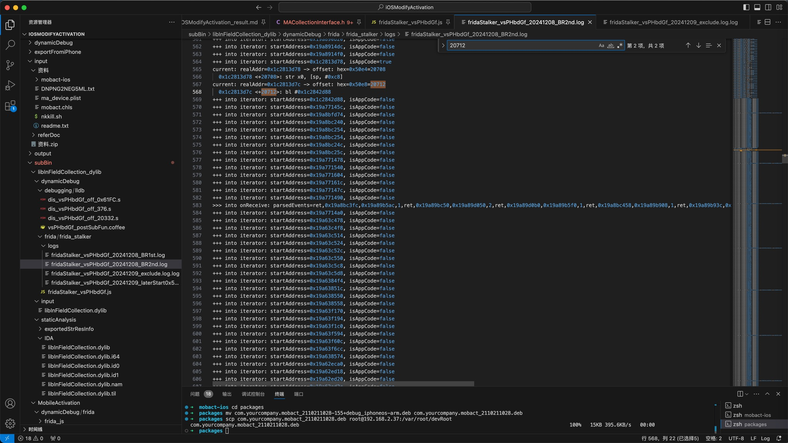
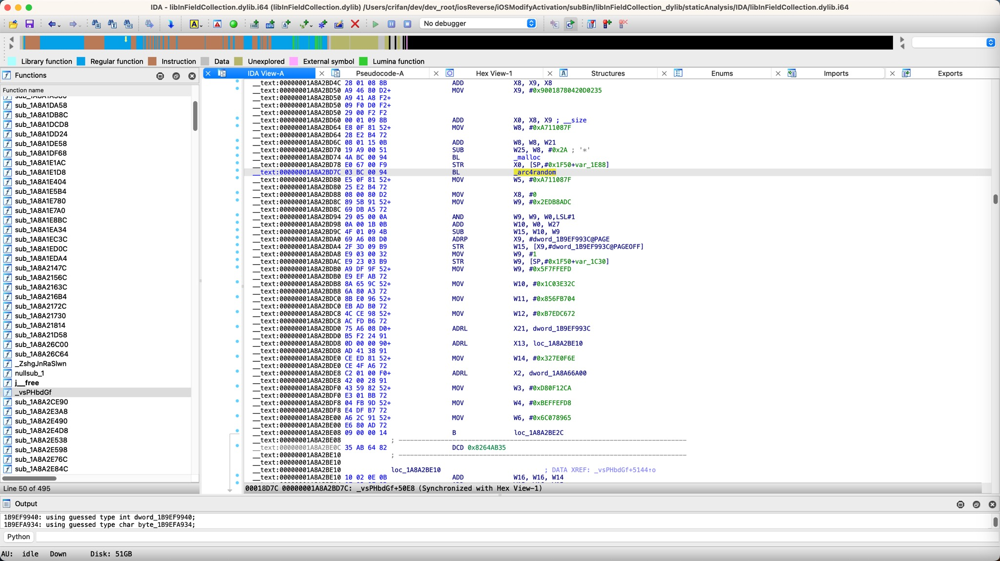
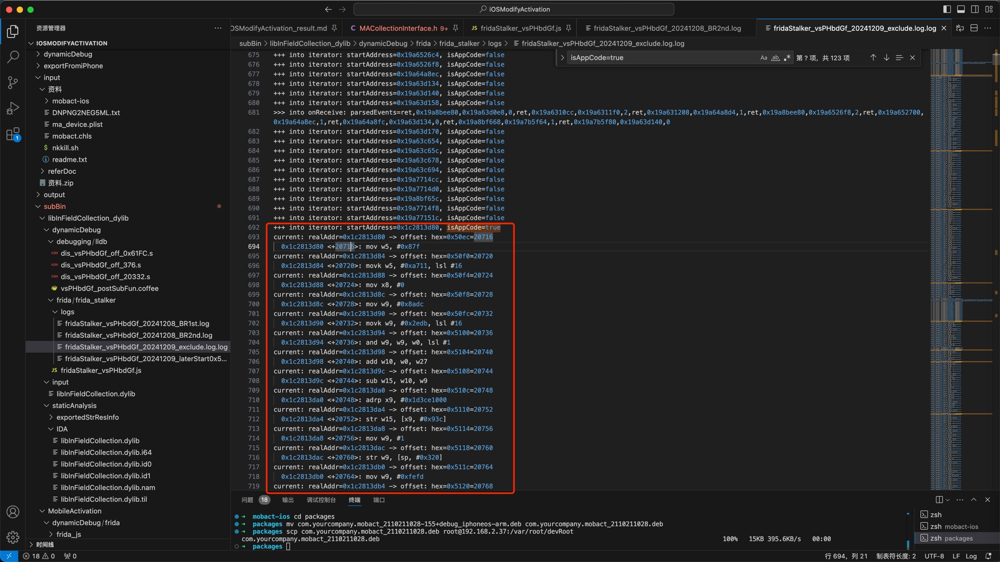

用Stalker.exclude提高效率和减少干扰
现象
libInFieldCollection.dylib的vsPHbdGf
中的Frida的Stalker的核心部分代码：
function stalkerHookNative_vsPHbdGf(){
console.log("into stalkerHookNative_vsPHbdGf:")
var libraryName = "libInFieldCollection.dylib"
const moduleBaseAddress = Module.findBaseAddress(libraryName)
console.log("libraryName=" + libraryName + " -> moduleBaseAddress=" + moduleBaseAddress)
if (null == moduleBaseAddress) {
console.error("Failed to find library " + libraryName)
return
}
var origFuncPtr = Module.findExportByName(libraryName, "vsPHbdGf")
console.log("origFuncPtr=" + origFuncPtr)
var funcRelativeStartAddr = origFuncPtr - moduleBaseAddress
console.log("funcRelativeStartAddr=" + funcRelativeStartAddr)
var functionSize = 0x61FC
// CollectPCRT == void __fastcall vsPHbdGf(__int64 a1, __int64 a2)
var argNum = 2
console.log("functionSize=" + functionSize + "=" + JsUtil.intToHexStr(functionSize) + ", argNum=" + argNum)
Stalker.exclude(module_system)
}
let hookFuncMap = {
0x164: // +356
function (context) {
var contextStr = JSON.stringify(context)
console.log("[0x164] contextStr=" + contextStr)
var x10 = context.x10
console.log("[0x164] x10=" + x10)
},
0x1DC: // +476
function (context) {
var contextStr = JSON.stringify(context)
console.log("[0x1DC] contextStr=" + contextStr)
var x10 = context.x10
console.log("[0x1DC] x10=" + x10)
},
}
FridaUtil.stalkerHookUnnameNative(moduleBaseAddress, funcRelativeStartAddr, functionSize, argNum, hookFuncMap)
}
function hookNative(){
console.log("into hookNative:")
stalkerHookNative_vsPHbdGf()
}
hookNative()
和对应的：
FridaUtil的stalkerHookUnnameNative
// Frida Stalker hoo unknown name native function
static stalkerHookUnnameNative(moduleBaseAddress, funcRelativeStartAddr, functionSize, argNum, hookFuncMap){
console.log("Frida Stalker hook: module: baseAddress=" + moduleBaseAddress)
var functionSizeHexStr = JsUtil.intToHexStr(functionSize)
var funcRelativeStartAddrHexStr = JsUtil.intToHexStr(funcRelativeStartAddr)
var funcRelativeEndAddr = funcRelativeStartAddr + functionSize
var funcRelativeEndAddrHexStr = JsUtil.intToHexStr(funcRelativeEndAddr)
console.log("function: relativeStartAddr=" + funcRelativeStartAddrHexStr + ", size=" + functionSize + "=" + functionSizeHexStr + ", relativeEndAddr=" + funcRelativeEndAddrHexStr)
const funcRealStartAddr = moduleBaseAddress.add(funcRelativeStartAddr)
// var funcRealEndAddr = funcRealStartAddr + functionSize
const funcRealEndAddr = funcRealStartAddr.add(functionSize)
console.log("funcRealStartAddr=" + funcRealStartAddr + ", funcRealEndAddr=" + funcRealEndAddr)
var curTid = null
console.log("curTid=" + curTid)
Interceptor.attach(funcRealStartAddr, {
onEnter: function(args) {
JsUtil.logStr("Trigged addr: relative [" + funcRelativeStartAddrHexStr + "] = real [" + funcRealStartAddr + "]")
for(var i = 0; i < argNum; i++) {
var curArg = args[i]
console.log("arg[" + i + "]=" + curArg)
}
var curTid = Process.getCurrentThreadId()
console.log("curTid=" + curTid)
Stalker.follow(curTid, {
events: {
call: false, // CALL instructions: yes please
ret: true, // RET instructions
exec: false, // all instructions: not recommended as it's
block: false, // block executed: coarse execution trace
compile: false // block compiled: useful for coverage
},
// onReceive: Called with `events` containing a binary blob comprised of one or more GumEvent structs. See `gumevent.h` for details about the format. Use `Stalker.parse()` to examine the data.
onReceive(events) {
var parsedEvents = Stalker.parse(events)
// var parsedEventsStr = JSON.stringify(parsedEventsStr)
// console.log(">>> into onReceive: parsedEvents=" + parsedEvents + ", parsedEventsStr=" + parsedEventsStr);
console.log(">>> into onReceive: parsedEvents=" + parsedEvents);
},
// transform: (iterator: StalkerArm64Iterator) => {
transform: function (iterator) {
// https://www.radare.org/doc/frida/interfaces/StalkerArmIterator.html
// console.log("iterator=" + iterator)
var instruction = iterator.next()
const startAddress = instruction.address
// console.log("+++ into iterator: startAddress=" + startAddress)
// const isAppCode = startAddress.compare(funcRealStartAddr) >= 0 && startAddress.compare(funcRealEndAddr) === -1
// const isAppCode = (startAddress.compare(funcRealStartAddr) >= 0) && (startAddress.compare(funcRealEndAddr) < 0)
const gt_realStartAddr = startAddress.compare(funcRealStartAddr) >= 0
const lt_realEndAddr = startAddress.compare(funcRealEndAddr) < 0
var isAppCode = gt_realStartAddr && lt_realEndAddr
console.log("+++ into iterator: startAddress=" + startAddress + ", isAppCode=" + isAppCode)
// // for debug
// isAppCode = true
// console.log("isAppCode=" + isAppCode + ", gt_realStartAddr=" + gt_realStartAddr + ", lt_realEndAddr=" + lt_realEndAddr)
do {
if (isAppCode) {
// is origal function code = which we focus on
// console.log("instruction: address=" + instruction.address
// + ",next=" + instruction.next()
// + ",size=" + instruction.size
// + ",mnemonic=" + instruction.mnemonic
// + ",opStr=" + instruction.opStr
// + ",operands=" + JSON.stringify(instruction.operands)
// + ",regsAccessed=" + JSON.stringify(instruction.regsAccessed)
// + ",regsRead=" + JSON.stringify(instruction.regsRead)
// + ",regsWritten=" + JSON.stringify(instruction.regsWritten)
// + ",groups=" + JSON.stringify(instruction.groups)
// + ",toString()=" + instruction.toString()
// + ",toJSON()=" + instruction.toJSON()
// );
var curRealAddr = instruction.address
// console.log("curRealAddr=" + curRealAddr)
// const isAppCode = curRealAddr.compare(funcRealStartAddr) >= 0 && curRealAddr.compare(funcRealEndAddr) === -1
// console.log(curRealAddr + ": isAppCode=" + isAppCode)
var curOffsetHexPtr = curRealAddr.sub(funcRealStartAddr)
var curOffsetInt = curOffsetHexPtr.toInt32()
console.log("current: realAddr=" + curRealAddr + " -> offset: hex=" + curOffsetHexPtr + "=" + curOffsetInt)
// var instructionStr = instruction.mnemonic + " " + instruction.opStr
var instructionStr = instruction.toString()
// console.log("\t" + curRealAddr + ": " + instructionStr);
// console.log("\t" + curRealAddr + " <+" + curOffsetHexPtr + ">: " + instructionStr)
console.log("\t" + curRealAddr + " <+" + curOffsetInt + ">: " + instructionStr)
if (curOffsetInt in hookFuncMap){
console.log("offset: " + curOffsetHexPtr + "=" + curOffsetInt)
// let curHookFunc = hookFuncMap.get(curOffsetInt)
var curHookFunc = hookFuncMap[curOffsetInt]
// console.log("curOffsetInt=" + curOffsetInt + " -> curHookFunc=" + curHookFunc)
// putCallout -> https://www.radare.org/doc/frida/interfaces/StalkerArmIterator.html#putCallout
// StalkerScriptCallout -> https://www.radare.org/doc/frida/types/StalkerScriptCallout.html
// CpuContext -> https://www.radare.org/doc/frida/types/CpuContext.html
// Arm64CpuContext -> https://www.radare.org/doc/frida/interfaces/Arm64CpuContext.html
// work: normal
iterator.putCallout(curHookFunc)
// var extraDataDict = {
// "curOffsetInt": curOffsetInt
// }
// Not work: abnormal
// iterator.putCallout((context) => {
// // iterator.putCallout((context, extraDataDict) => {
// // console.log("match offset: " + curOffsetHexPtr + ", curRealAddr=" + curRealAddr)
// // curHookFunc(context, curOffsetInt, moduleBaseAddress)
// // context.curOffsetInt = curOffsetInt
// // context.curOffsetHexPtr = curOffsetHexPtr
// // context.moduleBaseAddress = moduleBaseAddress
// // context[curOffsetInt] = curOffsetInt
// // context[curOffsetHexPtr] = curOffsetHexPtr
// // context[moduleBaseAddress] = moduleBaseAddress
// // curHookFunc(context, extraDataDict)
// curHookFunc(context)
// })
}
}
iterator.keep()
} while ((instruction = iterator.next()) !== null)
}
});
// function needDebug(context) {
// console.log("into needDebug")
// // console.log("into needDebug: context=" + context)
// // var contextStr = JSON.stringify(context, null, 2)
// // console.log("context=" + contextStr)
// // var x9Value1 = context.x9
// // var x9Value2 = context["x9"]
// // console.log("x9Value1=" + x9Value1 + ", x9Value2=" + x9Value2)
// }
},
onLeave: function(retval) {
console.log("addr: relative [" + funcRelativeStartAddrHexStr + "] real [" + funcRealStartAddr + "] -> retval=" + retval)
if (curTid != null) {
Stalker.unfollow(curTid)
console.log("Stalker.unfollow curTid=", curTid)
}
}
})
}
注：其最新代码详见：FridaUtil.js
但是hook不到，该函数vsPHbdGf的全部代码
具体现象就是： vsPHbdGf函数代码很多，但是Stalker输出的代码执行逻辑，最后，最多，只到：
frida/frida_stalker/logs/fridaStalker_vsPHbdGf_20241208_BR2nd.log
[iPhone::mobileactivationd ]-> %reload
into hookNative:
into stalkerHookNative_vsPHbdGf:
libraryName=libInFieldCollection.dylib -> moduleBaseAddress=0x1c27fb000
origFuncPtr=0x1c280ec94
funcRelativeStartAddr=81044
functionSize=25084=0x61fc, argNum=2
Frida Stalker hook: module: baseAddress=0x1c27fb000
function: relativeStartAddr=0x13c94, size=25084=0x61fc, relativeEndAddr=0x19e90
funcRealStartAddr=0x1c280ec94, funcRealEndAddr=0x1c2814e90
curTid=null
[iPhone::mobileactivationd ]-> ============ Trigged addr: relative [0x13c94] = real [0x1c280ec94] ============
arg[0]=0x16fa8a988
arg[1]=0x16fa8a984
curTid=21019
+++ into iterator: startAddress=0x10f3c1768, isAppCode=false
+++ into iterator: startAddress=0x10f3c1778, isAppCode=false
...
+++ into iterator: startAddress=0x1c280eca4, isAppCode=true
current: realAddr=0x1c280eca4 -> offset: hex=0x10=16
0x1c280eca4 <+16>: stp x20, x19, [sp, #0x40]
...
current: realAddr=0x1c2813d74 -> offset: hex=0x50e0=20704
0x1c2813d74 <+20704>: bl #0x1c2842e9c
+++ into iterator: startAddress=0x1c2842e9c, isAppCode=false
+++ into iterator: startAddress=0x19a8914c0, isAppCode=false
...
+++ into iterator: startAddress=0x19a8914f0, isAppCode=false
+++ into iterator: startAddress=0x1c2813d78, isAppCode=true
current: realAddr=0x1c2813d78 -> offset: hex=0x50e4=20708
0x1c2813d78 <+20708>: str x0, [sp, #0xc8]
current: realAddr=0x1c2813d7c -> offset: hex=0x50e8=20712
0x1c2813d7c <+20712>: bl #0x1c2842d88
+++ into iterator: startAddress=0x1c2842d88, isAppCode=false
+++ into iterator: startAddress=0x19a77145c, isAppCode=false
+++ into iterator: startAddress=0x19a8bfd74, isAppCode=false
...

对应着IDA中的D7C结尾的位置：

后续的，之后的代码，就看不到运行了。
原因
基本上确定就是：
由于（Stalker）去hook的内容太多，导致出现异常，即没有hook到后续代码的运行
解决办法
用Stalker.exclude排除掉其他的、无需关心的代码
具体步骤
- 先找到，要排除掉的代码的范围
- 核心思路是：从你的函数中，真实额外调用了第三方（尤其是系统库中的函数），去寻找要排除掉的范围
- 举例
- 此处iOS的程序，且调试期间的确看到了后续代码会调用到
malloc、arc4random等函数- 其中，好像是，这些函数就是属于 ObjC或System相关的库中？
- 且此处的函数vsPHbdGf所属的库libInFieldCollection.dylib，所依赖的外部库，即import的库
- libInFieldCollection_dylib/staticAnalysis/exportedStrResInfo/libInFieldCollection_rabin2_l_libraries.coffee
/System/Library/Frameworks/IOKit.framework/Versions/A/IOKit/System/Library/Frameworks/Foundation.framework/Foundation/System/Library/Frameworks/CoreFoundation.framework/CoreFoundation/usr/lib/libMobileGestalt.dylib/usr/lib/libobjc.A.dylib/usr/lib/libSystem.B.dylib
- libInFieldCollection_dylib/staticAnalysis/exportedStrResInfo/libInFieldCollection_rabin2_l_libraries.coffee
- 其中就有
- iOS的常见的底层通用的库
/usr/lib/libobjc.A.dylib/usr/lib/libSystem.B.dylib
- iOS的常见的底层通用的库
- 所以，基本上可以确定就是：
- 此处后续要排除的范围，就是：
libobjc.A.dylib、libSystem.B.dylib等系统基础的底层的库
- 此处后续要排除的范围，就是：
- 此处iOS的程序，且调试期间的确看到了后续代码会调用到
- 再去用
Stalker.exclude排除掉（整个库）
然后再去代码中加上：
// try exclude not-concern functions inside common libs
// var moduleName_libObjc = "/usr/lib/libobjc.A.dylib"
var moduleName_libObjc = "libobjc.A.dylib"
// FridaUtil.printModuleInfo(moduleName_libObjc)
var module_libObjc = Process.getModuleByName(moduleName_libObjc)
console.log("module_libObjc=" + module_libObjc)
if (null != module_libObjc) {
FridaUtil.printModuleBasicInfo(module_libObjc)
Stalker.exclude(module_libObjc)
}
// var moduleName_system = "/usr/lib/libSystem.B.dylib"
var moduleName_system = "libSystem.B.dylib"
// FridaUtil.printModuleInfo(moduleName_system)
var module_system = Process.getModuleByName(moduleName_system)
console.log("module_system=" + module_system)
if (null != module_system) {
FridaUtil.printModuleBasicInfo(module_system)
Stalker.exclude(module_system)
}
最新代码是：
function stalkerHookNative_vsPHbdGf(){
console.log("into stalkerHookNative_vsPHbdGf:")
var libraryName = "libInFieldCollection.dylib"
const moduleBaseAddress = Module.findBaseAddress(libraryName)
console.log("libraryName=" + libraryName + " -> moduleBaseAddress=" + moduleBaseAddress)
if (null == moduleBaseAddress) {
console.error("Failed to find library " + libraryName)
return
}
var origFuncPtr = Module.findExportByName(libraryName, "vsPHbdGf")
console.log("origFuncPtr=" + origFuncPtr)
var funcRelativeStartAddr = origFuncPtr - moduleBaseAddress
console.log("funcRelativeStartAddr=" + funcRelativeStartAddr)
// for debug
/*
[iPhone::mobileactivationd ]-> ============ Trigged addr: relative [0x13c94] = real [0x1c280ec94] ============
...
+++ into iterator: startAddress=0x1c2813d78, isAppCode=true
current: realAddr=0x1c2813d78 -> offset: hex=0x50e4=20708
0x1c2813d78 <+20708>: str x0, [sp, #0xc8]
current: realAddr=0x1c2813d7c -> offset: hex=0x50e8=20712
0x1c2813d7c <+20712>: bl #0x1c2842d88
*/
// // use later address as start address, try to avoid only hook part code == not hook all code
// funcRelativeStartAddr = funcRelativeStartAddr + 0x50e4
var functionSize = 0x61FC
// for debug: make larger, tyr to support hook more code
// var functionSize = 0x10000
// CollectPCRT == void __fastcall vsPHbdGf(__int64 a1, __int64 a2)
var argNum = 2
console.log("functionSize=" + functionSize + "=" + JsUtil.intToHexStr(functionSize) + ", argNum=" + argNum)
// try exclude not-concern functions inside common libs
// var moduleName_libObjc = "/usr/lib/libobjc.A.dylib"
var moduleName_libObjc = "libobjc.A.dylib"
// FridaUtil.printModuleInfo(moduleName_libObjc)
var module_libObjc = Process.getModuleByName(moduleName_libObjc)
console.log("module_libObjc=" + module_libObjc)
if (null != module_libObjc) {
FridaUtil.printModuleBasicInfo(module_libObjc)
Stalker.exclude(module_libObjc)
}
// var moduleName_system = "/usr/lib/libSystem.B.dylib"
var moduleName_system = "libSystem.B.dylib"
// FridaUtil.printModuleInfo(moduleName_system)
var module_system = Process.getModuleByName(moduleName_system)
console.log("module_system=" + module_system)
if (null != module_system) {
FridaUtil.printModuleBasicInfo(module_system)
Stalker.exclude(module_system)
}
let hookFuncMap = {
0x164: // +356
function (context) {
var contextStr = JSON.stringify(context)
console.log("[0x164] contextStr=" + contextStr)
var x10 = context.x10
console.log("[0x164] x10=" + x10)
},
0x1DC: // +476
function (context) {
var contextStr = JSON.stringify(context)
console.log("[0x1DC] contextStr=" + contextStr)
var x10 = context.x10
console.log("[0x1DC] x10=" + x10)
},
}
FridaUtil.stalkerHookUnnameNative(moduleBaseAddress, funcRelativeStartAddr, functionSize, argNum, hookFuncMap)
}
function hookNative(){
console.log("into hookNative:")
stalkerHookNative_vsPHbdGf()
}
hookNative()
最开始的输出中，关于库的输出是：
module_libObjc=[object Object]
Module: name=libobjc.A.dylib, base=0x199e82000, size7897088, path=/usr/lib/libobjc.A.dylib
module_system=[object Object]
Module: name=libSystem.B.dylib, base=0x199e17000, size8192, path=/usr/lib/libSystem.B.dylib
Frida Stalker hook: module: baseAddress=0x1c27fb000
最终结果是：
即可顺利hook出后续代码
- （
d7c结尾的）+20712的后续代码- 从（
d80结尾的）+20716开始的后续的代码
- 从（
的执行了：
frida/frida_stalker/logs/fridaStalker_vsPHbdGf_20241209_exclude.log.log
...
+++ into iterator: startAddress=0x19a77151c, isAppCode=false
+++ into iterator: startAddress=0x1c2813d80, isAppCode=true
current: realAddr=0x1c2813d80 -> offset: hex=0x50ec=20716
0x1c2813d80 <+20716>: mov w5, #0x87f
current: realAddr=0x1c2813d84 -> offset: hex=0x50f0=20720
0x1c2813d84 <+20720>: movk w5, #0xa711, lsl #16
current: realAddr=0x1c2813d88 -> offset: hex=0x50f4=20724
0x1c2813d88 <+20724>: mov x8, #0

心得
刚开始以为是Frida的Stalker的bug呢，导致函数的后续代码没触发
后来也看到了，官网有提到：
Stalker | Frida • A world-class dynamic instrumentation toolkit
Excluded Ranges
Stalker also has the API
Stalker.exclude(range)that’s passed a base and limit used to prevent Stalker from instrumenting code within these regions. Consider, for example, your thread callsmalloc()insidelibc. You most likely don’t care about the inner workings of the heap and this is not only going to slow down performance, but also generate a whole lot of extraneous events you don’t care about. One thing to consider, however, is that as soon as a call is made to an excluded range, stalking of that thread is stopped until it returns. That means, if that thread were to call a function which is not inside a restricted range, a callback perhaps, then this would not be captured by Stalker. Just as this can be used to stop the stalking of a whole library, it can be used to stop stalking a given function (and its callees) too. This can be particularly useful if your target application is statically linked. Here, was cannot simply ignore all calls tolibc, but we can find the symbol formalloc()usingModule.enumerateSymbols()and ignore that single function.
以及找到了对应的API接口描述
JavaScript API | Frida • A world-class dynamic instrumentation toolkit
Stalker
Stalker.exclude(range): marks the specified memoryrangeas excluded, which is an object withbaseandsizeproperties – like the properties in an object returned by e.g.Process.getModuleByName().This means Stalker will not follow execution when encountering a call to an instruction in such a range. You will thus be able to observe/modify the arguments going in, and the return value coming back, but won’t see the instructions that happened between.
Useful to improve performance and reduce noise.
其中最后一行明显是：
- 可以用来：提高性能和降低噪音。
-》但是差点，仍旧怀疑是Stalker的bug，而没去尝试Stalker.exclude，差点错过了这个Stalker.exclude
-》实践证明：Stalker.exclude是可以解决此问题的
最后的心得，就是：
- 以后遇到这类，觉得有一点希望的思路，只要时间允许，还是尽量也去试试
- 且同时也是增加技术能力的，此处即新学习了个Stalker.exclude的用法